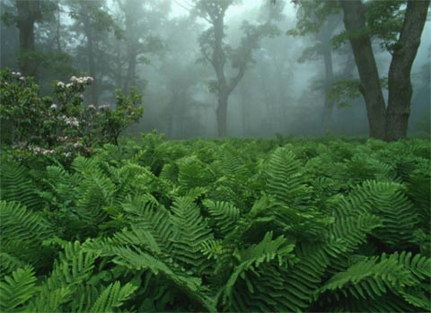

The Route
Georgia
Georgia has 75 miles (120 km) of the trail, including the southern terminus at Springer Mountain at an elevation of 3,280 feet (992 m). At 4,461 feet (1360 m), Blood Mountain is the highest point on the trail in Georgia.
North Carolina
The trail enters from Georgia at Bly Gap, ascending peaks such as Standing Indian Mountain, Mt. Albert, and Wayah Bald. It then goes by Nantahala Outdoor Center at the Nantahala River Gorge and the Nantahala River crossing.
Tennessee
The section that runs just below the summit of Clingmans Dome in Great Smoky Mountains National Park is along the North Carolina and Tennessee border and is the highest point on the trail at 6,625 feet (2019 m).
Virginia
With the climate, and the timing of northbound hikers, this section is wet and challenging because of the spring thaw and heavy spring rainfall. Substantial portions closely parallel the Blue Ridge Parkway and, in Shenandoah National Park, the Skyline Drive. Parts of the trail near the Blue Ridge Parkway and the Skyline Drive are often considered the best for beginner hikers. In the southwestern portion of the state, the trail goes within one half mile of the highest point in Virginia, Mount Rogers, which is a short side-hike from the AT.
West Virginia
Here the trail passes through the town of Harpers Ferry, headquarters of the Appalachian Trail Conservancy (LINK TO http://www.appalachiantrail.org/). Harpers Ferry is considered the "psychological midpoint" of the AT.
Maryland
Maryland has 41 miles (66 km) of the trail, with elevations ranging from 230 to 1,880 feet (70–570 m). Hikers are required to stay at designated shelters and campsites. The trail runs along the C&O Canal Towpath route for 3 miles (4.8 km).
Pennsylvania
The trail extends from the Pennsylvania - Maryland line at Pen Mar, a tiny town straddling the state line, to the Delaware Water Gap, at the Pennsylvania - New Jersey border. The Susquehanna River is generally considered the dividing line between the northern and southern sections of the Pennsylvania AT, and Pine Grove Furnace State Park the halfway point of the entire AT.
New Jersey
The trail enters New Jersey from the south on a pedestrian walkway along the Interstate 80 bridge over the Delaware River, ascends from the Delaware Water Gap to the top of Kittatinny Ridge in Worthington State Forest, passes Sunfish Pond (right), continues through Stokes State Forest and eventually reaches High Point State Park, the highest peak in New Jersey (a side trail is required to reach the actual peak). It then turns in a southeastern direction along the New York border for about 30 miles (48 km), passing over long sections of boardwalk bridges over marshy land, then entering Wawayanda State Park and then the Abram S. Hewitt State Forest just before entering New York near Greenwood Lake.
New York
From south to north, the trail summits many small mountains under 1,400 feet (430 m) in elevation, its highest point in New York being Prospect Rock at 1,433 feet (438 m), and only 3,000 feet (800 m) from the border with New Jersey. The trail continues north, climbing near Fitzgerald Falls, passing through Sterling Forest, and then entering Harriman State Park and Bear Mountain State Park. It crosses the Hudson River on the Bear Mountain Bridge, the lowest point on the entire Appalachian Trail at 124 feet (38 m). It then passes through Fahnestock State Park, and continues northeast and crosses the Metro-North Railroad's Harlem Line. This track crossing is the site of the only train station along the trail's length.
Connecticut
The trail proceeds northward through the Housatonic River valley and hills to its west, veering northwesterly and, at Salisbury, ascending the southern Taconic mountains, at Lion's Head affording a view northeasterly towards Mt. Greylock and other points in Massachusetts, and at Bear Mountain, reaching over 2,000 feet (610 m) in elevation for the first time since Pennsylvania and yielding views across the Hudson River valley to the Catskills and across the broad expanse of the Housatonic valley and the Berkshire and Litchfield Hills to the east. Just north of Bear, the trail, as it crosses into Massachusetts, descends into Sages Ravine, a deep gorge in the eastern Taconic ridgeline which is home to a fragile old growth forest. As the trail crosses the brook in the ravine, it leaves the area maintained by the Connecticut section of the Appalachian Mountain Club.
Massachusetts
The entire section of trail is in western Massachusetts' Berkshire County. It summits the highest peak in the southern Taconic Range, Mount Everett (2,602 ft., 793 m), then descends to the Housatonic River valley and skirts the town of Great Barrington. The trail passes through the towns of Dalton and Cheshire, and summits the highest point in the state at 3,491 feet (1,064 m), Mount Greylock. It then quickly descends to the valley within 2 miles (3 km) of North Adams and Williamstown, before ascending again to the Vermont state line.
Vermont
Upon entering Vermont, the trail coincides with the southernmost sections of the generally north/south-oriented Long Trail (which is subject to a request by its maintainers to protect it in its most vulnerable part of the year by forgoing spring hiking). It follows the ridge of the southern Green Mountains, summiting such notable peaks as Stratton Mountain, Glastenbury Mountain and Killington Peak. After parting ways with the Long Trail at Maine Junction, the AT turns in a more eastward direction, crossing the White River, passing through Norwich, and entering Hanover, New Hampshire, as it crosses the Connecticut River.
New Hampshire
The New Hampshire AT is nearly all within the White Mountain National Forest. For northbound thru-hikers, it is the beginning of the main challenges that go beyond enduring distance and time: in New Hampshire and Maine, rough or steep ground is more frequent and alpine conditions are found near summits and along ridges. The trail reaches 17 of the 48 four-thousand footers of New Hampshire, including 6,288' Mount Washington, the highest point of the AT north of Tennessee.
Maine

More moose are seen by hikers in this state than any other on the trail. The northern terminus of the Appalachian Trail is on Mount Katahdin's Baxter Peak in Baxter State Park.
In some parts of the trail in Maine, such as the Mahoosic Notch, even the strongest hikers may only average 1 mph. There are other parts in which hikers must hold on to tree limbs and roots to climb and descend, which are especially dangerous and hazardous in wet weather conditions.
The western section includes a mile-long (1.6 km) stretch of boulders, some of which hikers must pass under, at Mahoosuc Notch, often called the trail's hardest mile. Also, although there are dozens of river and stream fords on the Maine section of the trail, the Kennebec River is the only one on the trail that requires a boat crossing. The most isolated portion in the state (and arguably on the entire trail) is known as the "Hundred-Mile Wilderness", which heads east-northeast from the town of Monson and ends outside Baxter State Park just south of Abol Bridge.